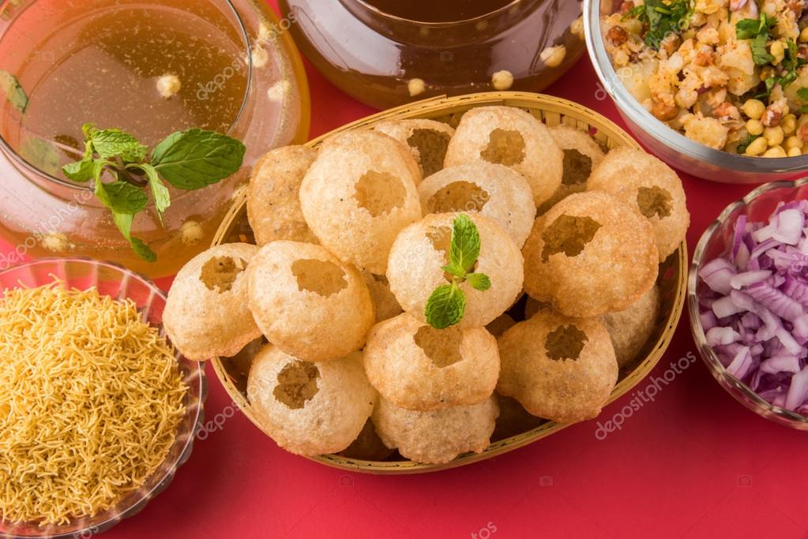
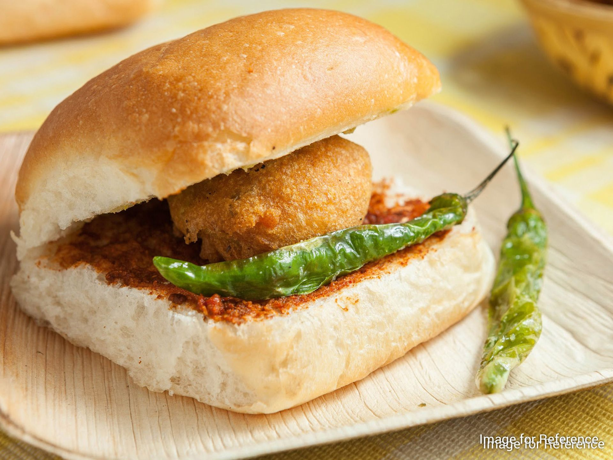
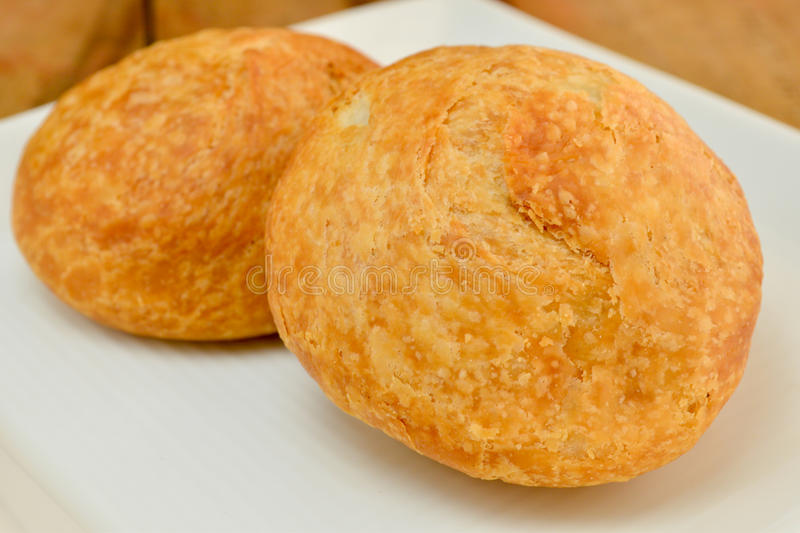
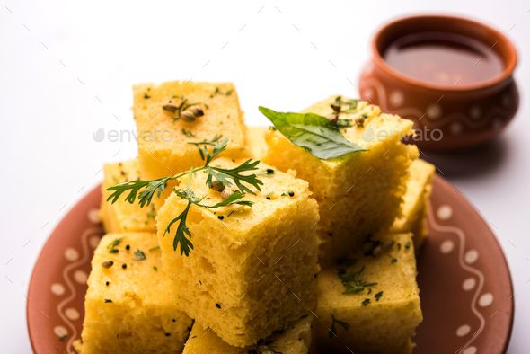

HELLO! after having a look on the heading i know you are lost in the basket of snacks.Yaa friends there are m,any snacks which are very taty rather than other.
Samosa is probably the ideal Indian snacks to enjoy in the evening with tea. Though it may be eaten and loved in many ways in India therefore we consider it as the part of our culture now but the originally this very amazing delicacy is not Indian. When you search for the origin of samosa recipe you will find that the dish came from middle east before 10th century. It came to Central Asia with rise in trade after 13th century.
The potato stuffing for samosa generally consists of spiced potatoes, onion, peas, cilantro, lentils, cauliflower, often chopped meat or fish (however vegetable version generally consumed in India), or sometimes fresh paneer.The samosas sold in the west and north of the pakistan largely consist of chopped meat-based fillings and they are comparatively less spicy. The meat samosa is made up of chopped meat (lamb, beef or chicken) and they are very well liked as snack food in Pakistan.Samosas are also known as singadas in Eastern Zone of Nepal, remaining of the country calls it Samosa.
“Pani Puri” is amongst the yummiest, mouth-watering and taste bud moving snacks. It is most widely used products in the Indian Chaat group, is the perfect example of an Indian roadside snack food You simply cannot avoid it. Pani Puri is a superb snack for the kids when they arrive from school. Little round crunchy puris are drenched in mint flavored delicious potato gravy. Preparing Pani Puri in the home is a better means of experiencing and enjoying the lip-smacking snack.

Pani Puri creates a fantastic presentation and it is simply exciting to eat. It is made of some basic ingredients, chana, moong beans and potato mixed with chat masala along with spicy ingredients. Chopped pudhina is sprinkled over the thick masala gravy. It is possible to replace other beans that you've available as well. You place these inside of a puri and add chutney and “pani.” Pani means here a distinctively flavored water.
Vada pav is a popular Maharashtrian street fast food popularly known as Indian burger. Mumbai street-food of a spicy vegetable patty in a bread. It is beloved snack across Mumbai and is now found at street stalls, malls, cafes and starred restaurants throughout India. August 23 is World Vada Pav Day, a day to celebrate and enjoy the humble vada pav. This dish is a delicious creation involving the heaven of softly cooked potatoes dancing gracefully with melting onion, glitter of ginger and garlic and coriander leaves, at last there was the hell of chillies. There was soft heartwarming blanket of the bread in which this patty is enclosed. It is reasonable, hot, filling and, in comparison to so many other dishes this is classed as fast, nutritious and energy-rich food.

Potato, staple and comfort food. World’s number one favorite root vegetable. Popular member of the Nightshade family like tomatoes, eggplants, peppers, and tomatillos. These are available everywhere as they are harvested somewhere every month of the year. Many recipes like Potato Podimas, Potato Masala, Vegetable 65, Sweet Potato Poli Roti, French Fries And Chips, Brinjal Potato Curry With Onion Tomato Gravy, Aloo Chutney Wala Potatoes Tossed In Chutney Masala, Chilli Masala Potatoes and lot, include potato as a major ingredient.
Khasta Dal Kachori is a very popular Rajasthani/ Gujarati snack and also a spicy snack popular in various parts of India and Pakistan that includes Uttar Pradesh, Rajasthan, Delhi, Maharashtra, Madhya Pradesh and Punjab regions. Kachori is also known as kachauri or kachodi or katchuri according to their regional language.

The kachoris that are fried and stuffed with pulses like the urad and moon dals are generally found in Kutch regions in Gujarat. Kachoris are often served with delicious chutney made of tamarind, mint, or coriander. In Delhi, kachori is often served as a chaat. In Delhi, there is another kind of kachori called as Khasta kachori or Raj Kachori.
Indian style Potato cutlet is delicious and liked by all kids. These cutlets can be served as party snack, packed for picnic or can be relished as an evening snacks.

Aloo cutletis a popular North Indian snack prepared with potatoes and other spices. It is one of the easiest snack and can be prepared in a jiffy. It is usually served hot with green chutney and tamarind chutney.
Besan Dhokla is a popular & delicious Gujarati (vegetarian) snack. Dhokla is a steamed food dish and can be used as a healthy and nutritious snack to other snacks. It is a popular snack made with fermented batter of gram (chickpeas).

Dhokla are of various types like the Khaman Dhokla, Khatta Dhokla, Cheese Dhokla and Rasia Dhokla and even innovative Sandwich Dhokla (a combination of any 2 Dhoklas or more). It is a very popular snack item in the state of Gujarat and many other parts of the world. The traditional dhokla recipe requires soaking, grinding and fermenting the rice and dal batter. If you don’t have time and wish to serve your guest or family Dhokla you can also prepare the instant version of dhokla prepared with sooji (suji, semolina or cream of wheat).
PRESS ON INDIAN SWEETSUP IN THE HEADING FRAME TO SEE MORE VARIETIES